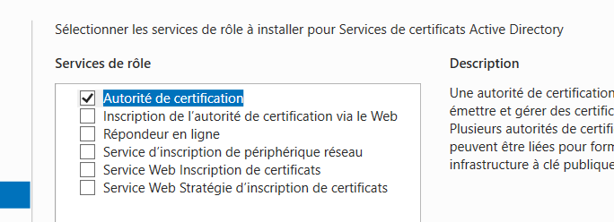
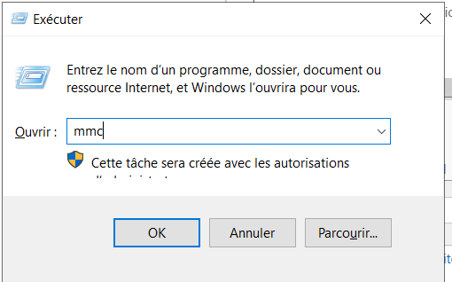
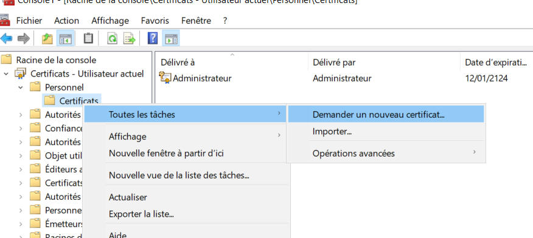
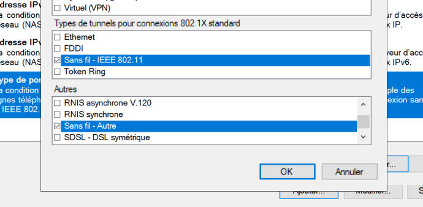

NPS
source : https://www.tp-link.com/us/support/faq/2678/
Installer le rôle ADDS
On met une adresse IP fixe, on renomme la machine et on désactive les mises à jour automatiques.

Installer le rôle Services de certificats Active Directory
On active le rôle Services de certificats Active Directory.

Lors de l'installation, on choisit seulement le rôle autorité de certification.

On finit la configuration en laissant tout par défaut.
Installer le rôle Services de stratégie et d'accès réseau
On installe le rôle Services de stratégie et d'accès réseau.

Créer l'utilisateur
On crée un utilisateur, qui sera utilisé pour se connecter au réseau.

Certificats
On commence par utiliser la commande Win+R et on tape mmc pour ouvrir la console.

On va dans fichier puis Ajouter ou supprimer des composants logiciels enfichables.

On fait un clic droit sur Certificats>Personnel>Certificats puis on clique sur Toutes les tâches>Demander un nouveau certificat…

On choisit Inscription à Active Directory puis on choisit Administrateur et Utilisateur.

Configurer le client RADIUS et les polices de réseau
On ouvre la fenêtre NPS.

On crée un nouveau client.
On lui donne un nom, puis on ajoute l'adresse IP. On ajoute ensuite un mot de passe.
L'adresse IP est celle du routeur et le mot de passe choisi devra être repris dans la configuration du routeur.

Faire un clic droit sur Stratégies>Stratégies réseau puis cliquer sur Nouveau.

On ajoute Groupes Windows en choisissant Utilisateurs du domaine.
On ajoute également Type de port NAS

On choisit sans fil - IEE 802.11 et Sans fil - Autre.

On coche les cases comme l'image ci-dessous.

Finir l'ajout de la stratégie.
Redémarrer le service NPS.
Désactiver le pare-feu
Il faut créer une règle qui autorise le trafic sur le port 1812.
Pour faire plus simple lors de la mise en place, on désactive entièrement le pare-feu.


Configuration du routeur
On accède à l'interface de configuration du routeur.
On va dans la partie Wifi, et on modifie les type de sécurité du réseau pour WPA/WPA2-Entreprise.
On peut alors modifier l'adresse IP du serveur RADIUS (IP du DC), le port et le mot de passe (celui choisi lors de l'ajout du client sur le DC).